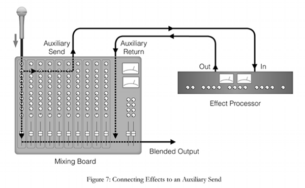

The DOM, HTML, CSS and JavaScript.
I'm currently seeing the DOM as a two-storied house, always accessed by a single front door. As you enter the door into this house, you would normally find a hallway through the floor level and stairs to the upper. The floor level – called the body level – will have a bunch of doors off the hallway to the main rooms, some of which may have further adjacent rooms coming off or within them. The upper, or head level, will have a couple of rooms too but generally not as many.
The materials, contents and base structure of this house come from the HTML, and the design, layout and decoration is the CSS. These are rendered together to create the physical shell of the house which is the DOM.
JavaScript is like some sort of interior designer/AV wizard/project manager who can come in afterwards to install all this cool stuff and rejig anything to do pretty much anything it wants to make the house awesome. JS is given a detailed schematic of every room and shortcuts, right down to the wiring and plumbing so it can utilise these in whatever way it needs. Hell, JS can even muck around with the structure and design if it wants. The entire house put together by the HTML and CSS is willingly handed over.
Control flow and friends.
Code is read from top to bottom, much like how us human folk do – ignoring the fact that I have this weird habit of sometimes skimming bottom to top first. Browsers don't do that! Oh except for certain occasions which I'll get to.
It helps to consider how you would like to have a set of instructions set out, like a recipe for example. It's not much use saying to throw an onion on the stove, dice the onion, then get a pan out and on medium heat. You've already buggered your onion and started a fire. We may be able to work around the order of that but a browser has better things to do, and will just set your onion on fire.
The exceptional occasions that I mentioned are referred to as control structures, with a couple of common examples being loops and conditional statements. A loop is effectively an instruction to, you guessed it, loop through blocks of code or information. This may be to leave your onion cooking to check through who earlier said they're coming for dinner, then based on the information you just scanned through, set the table for however many. A conditional statement in this case might say IF the onion looks nice – all good. ELSE – it's the bin for the onion. Dinner's off.
The DOM.
Well what actually is the DOM? It's not really a house. It sounds like a bit of an old gangster doesn't it? Yet, the Document Object Model, or DOM, is in fact a language-independent model consisting of 'objects' which represent the structure of the HTML document. It is important to note that it is language-independent, as this leaves it open to interact with.
As with my house metaphor above, the DOM is a platform constructed as a model of the HTML. In fact, the browser constructs it after it first reads the HTML and processes the CSS, then these resulting objects are the means by which JavaScript can interact with the page.
Arrays and Objects.
An array is simply a collection of items, or data, in a list, with each item being assigned an index number in order from 0 upwards. An object on the other hand is a collection of related data with each having a 'key and a 'value'.
You are an object. In the sense that you have a bunch of key and value properties. You'll have an 'age' with associated value, a 'name' with a value, a 'height' with a value and so on. JavaScript has the ability with to select these keys and therefore values with either a dot between keys or square brackets around.
Let's use my dog Sam as an example.
let sam = {
name: 'Sam',
age: '1',
height: '25cm'
}
To extract his age from this object we could console.log(sam.age) which would pull out the number '1' (as a string in this case). console.log(sam.name) would give us 'Sam'.
Now let make an array out of myself and the dogs:
let benAndDogs = ['Ben', 'Frank', 'Sam'] – note the square brackets here.
For the purpose of what we're doing, we want to get Frank's name out of the list, so we go console.log(benAndDogs[1]). Remember I noted that the index number assigned begins at 0? Therefore Frank has the index of 1.
Functions, oh functions.
Functions. Where would we be without functions? The best analogy I can think of for functions is only really helpful for audio engineers and producers.. but hear me out!
In a music production environment, you have what's called an auxiliary channel, or return channel. You know how big sound desks have heaps of scary looking rows of dials and faders? A section of these will be auxiliaries. On these special channels you can place various effects and processors that can be used by multiple instruments channels and used over and over again. For example, a reverb effect is commonly used on a voice to give it a nice spacial sound. This could be placed (incorrectly) directly on the standard channel that the vocal is going through, or you could have it on an auxiliary channel where it can be accessed by all the other instrument channels as well. This is especially the case in a hardware studio where you may only have a few reverb units and need to use them wisely!
Functions are processes designed to perform a certain order of tasks and can range greatly in complexity. Setting, or defining a function can prevent you from have to recreate that same order of tasks again in your code, as it can be used again and again, much like the audio effects processors on our auxiliary channel. Honestly I wish a simpler analogy came to me first but that one really works for me.
